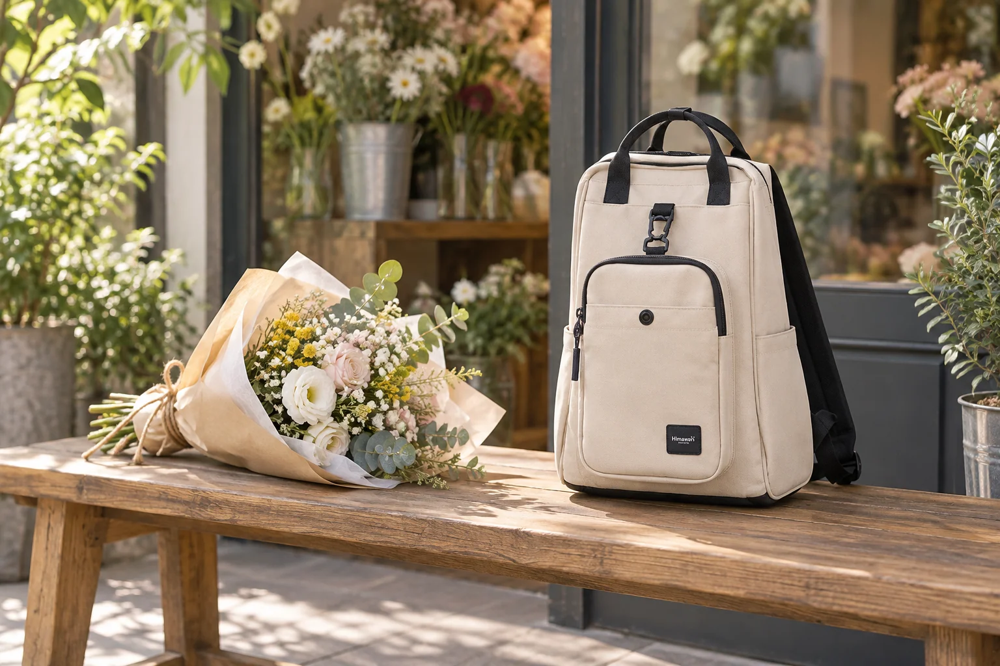

꽃다발을 선물하러 가는 날: 백팩과 꽃은 따로 들기

퇴근길 꽃집에서 꽃다발을 찾아 약속 장소로 향하는 날을 생각해 봅니다. 포장된 꽃은 잠깐 들기에는 가벼워 보여도 줄기 아래쪽에 물기가 남아 있거나 포장지가 눌리기 쉽습니다. 가방에 들어갈 크기인지보다, 꽃의 모양을 지키며 두 손을 어떻게 쓸지 먼저 정해두는 편이 낫습니다. 백팩은 평소 개인 물건의 자리로 두고 꽃다발은 따로 들고 가는 동선을 만들어 보세요.
찾으러 가기 전, 포장 상태를 물어봅니다
꽃집에 보관·운반에 관한 안내가 있다면 그 방법을 먼저 따르세요. 줄기 끝의 물 처리 방식과 포장지의 손잡이 유무를 확인하면 이동 중에 어디를 잡아야 할지 알 수 있습니다. 별도의 쇼핑백이 필요한지도 미리 문의해 보세요. 꽃의 종류에 따라 관리가 다르므로 백팩의 크기만 보고 꽃다발을 접거나 눌러 담겠다고 계획하지 않는 것이 좋습니다.
백팩에는 손을 비워 줄 물건만 남깁니다
지갑, 열쇠, 휴대전화처럼 꽃다발을 든 상태에서도 꺼내야 할 개인 물건의 자리를 정해 둡니다. 꽃집에서 결제하거나 대중교통을 탈 때 필요한 것을 가방 깊숙이 넣어 두면 포장된 꽃을 잠시 내려놓아야 할 수 있습니다. 다른 손으로 꺼내기 어려운 물건은 출발 전에 위치를 바꿔 보세요. 꽃다발 자체와 물이 묻은 포장재는 백팩 안의 종이·전자기기와 함께 담지 않습니다.
이동 중에는 꽃의 방향을 고정합니다
서서 이동한다면 꽃 머리가 사람이나 벽에 닿지 않게 몸 앞쪽의 여유를 살펴보세요. 앉을 때는 가방을 먼저 안정된 위치에 두고 꽃다발이 눌리지 않을 자리를 찾습니다. 사람이 많은 곳에서는 꽃을 높이 들기보다 포장지를 잡은 손과 어깨의 움직임을 함께 의식하는 편이 안전합니다. 보행이나 교통 이용에 방해가 되면 꽃집의 운반용 포장이나 별도 운반 방법을 다시 확인하세요.
건네기 직전까지 포장은 그대로 둡니다
선물할 사람을 만나기 전에 포장지의 접힌 부분과 물기가 새지 않았는지 조용히 확인하세요. 바람에 풀린 리본이나 종이를 급하게 가방 포켓에 밀어 넣으면 다른 소지품이 젖거나 구겨질 수 있습니다. 꽃을 건넬 때는 백팩을 열어 다른 물건을 찾지 않아도 되도록 선물 카드가 있다면 별도 봉투에 준비해 둡니다. 상대에게 관리 방법을 전할 때는 꽃집이 알려 준 내용을 기준으로 이야기하세요.
돌아오는 길에는 빈 손만큼 가방도 확인합니다
꽃을 건네고 나면 들고 온 쇼핑백이나 영수증이 남을 수 있습니다. 백팩에 임시로 넣은 종이와 포장재를 귀가 후 꺼내고, 바깥에 물기가 닿았다면 제품 관리 표시를 확인해 부드럽게 닦은 뒤 충분히 말립니다. 사진은 실제 Himawari No.0403 베이지 가방을 참조해 꽃집 장면으로 만든 AI 연출 이미지입니다. 꽃과 포장재는 가방 구성품이 아니며 실제 고객의 선물 장면을 기록한 사진이 아닙니다.
참고·안내
- Himawari No.0403 제품 정보
- 실제 Himawari No.0403 베이지 제품 원본을 참조한 AI 꽃집 연출 이미지입니다. 꽃다발과 주변 소품은 제품 구성품이 아니며 실제 고객 사진이 아닙니다.
자주 묻는 질문
포장한 꽃다발을 백팩에 넣어도 되나요?
꽃의 눌림과 줄기 아래쪽의 물기를 고려하면 개인 물건과 분리해 들고 가는 편이 좋습니다. 꽃집의 운반 안내를 먼저 확인하세요.
꽃을 든 채 자주 쓰는 물건은 어디에 두면 좋나요?
출발 전에 지갑·교통카드·휴대전화의 위치를 정하고 한 손으로 꺼낼 수 있는지 확인해 보세요.